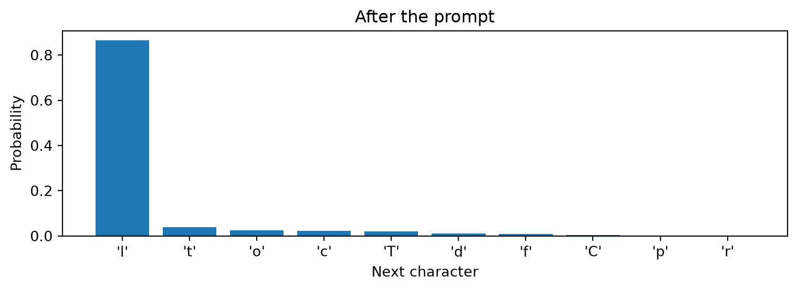

Learning to generate text, one character at a time
A Tiny Shakespeare companion to Lectures 14 and 15
Author
Marcel Turcotte
Published
November 5, 2026
How much of a play could a network learn by predicting its next character? Spaces, word spellings, speaker labels, and the meaning of a conversation all operate at different scales. We will train two small networks and inspect which of these patterns emerge.
This independently executable self-study notebook connects Lecture 14’s multiclass classification and cross-entropy to Lecture 15’s one-dimensional convolutions. We first use a feedforward neural network, then a Conv1D network. Both learn from the same text, predict one character after a fixed context, and use the same generation procedure.
The learning objectives are to construct next-character examples, explain autoregressive text generation, compare dense and convolutional processing of a context, and distinguish plausible local text from sustained coherence.
Research foundation
Bengio, Ducharme, Vincent, and Jauvin (2003) developed an influential neural probabilistic language model. A feedforward network receives a fixed number of preceding words and predicts the next word. The original model jointly learns a shared vector representation for each word and a prediction network operating on the concatenated vectors. These learned representations help transfer information between different word contexts.
We adapt its fixed-context neural prediction principle. Our tokens are characters, our inputs are fixed one-hot vectors, and our hidden activation is ReLU rather than the paper’s tanh. The experiment does not reproduce its learned word embeddings or its reported results. It lets us examine the prediction-and-generation mechanism using the layers already studied.
Preparation
Run from a fresh kernel, in order. NumPy, Matplotlib, and TensorFlow with Keras are required. Select the TensorFlow backend before importing the framework. The default experiment uses the whole corpus and trains two networks; it takes longer than a short names experiment. Each training call reports its elapsed time.
import osos.environ["KERAS_BACKEND"] ="tensorflow"from pathlib import Pathfrom time import perf_counterimport numpy as npimport matplotlib.pyplot as pltimport tensorflow as tffrom tensorflow import kerasSEED =42CONTEXT_LENGTH =32HIDDEN_UNITS =128FILTERS =64KERNEL_SIZE =3EPOCHS =12BATCH_SIZE =256LEARNING_RATE =0.003keras.utils.set_random_seed(SEED)print(f"TensorFlow {tf.__version__}; Keras backend: {keras.backend.backend()}")
TensorFlow 2.21.0; Keras backend: tensorflow
The corpus and its partitions
Tiny Shakespeare is a subset of Shakespeare’s works distributed with Andrej Karpathy’s char-rnn project. It contains approximately 1.1 million characters. Preserve capitalization, punctuation, spaces, and newlines: each is part of what the network must learn. A period is an ordinary character, rather than a special instruction to stop.
The course copy is data/tiny_shakespeare.txt. If it is absent, Keras downloads the same corpus into the current directory’s data folder. A fixed source revision and SHA-256 checksum identify the file.
Corpus: 1,115,394 characters
Partitions: 892,315 training, 111,539 validation, 111,540 test
Beginning of the training text:
First Citizen:
Before we proceed any further, hear me speak.
All:
Speak, speak.
First Citizen:
You are all resolved rather to die than to famish?
All:
Resolved. resolved.
First Citizen:
First, you know Caius Marcius is chief enemy to the people.
All:
We know't, we know't.
First Citizen:
Let us kill him, and we'll have corn at our own price.
I
We split the continuous text into contiguous 80%, 10%, and 10% blocks before constructing windows. No context or target will cross a partition boundary. Randomly splitting overlapping windows would place nearly identical passages in training and evaluation data.
These blocks need not contain the same characters, topics, or speakers in the same proportions. Evaluation asks how well the model predicts later held-out text from this compilation; it is not a test on independent authors or genres. Validation curves are available during development. The test block is reserved for the final evaluation of the specified experiment.
Character IDs and one-hot inputs
A token is one unit in a sequence. Here each character is a token, including spaces and newlines. Build the vocabulary from the training block and reuse that mapping for validation, test, and generation. In this particular split, every held-out character also occurs in training.
Character IDs identify categories; their numerical distances have no meaning. One-hot encoding replaces each ID with a vector containing one 1 and otherwise 0s. This gives one channel per character type, as in the nucleotide-sequence representation in Lecture 15’s biological-sequence companion.
vocabulary =sorted(set(train_text))VOCAB_SIZE =len(vocabulary)char_to_id = {char: index for index, char inenumerate(vocabulary)}def encode(passage):return np.array([char_to_id[char] for char in passage], dtype="int32")train_ids = encode(train_text)valid_ids = encode(valid_text)test_ids = encode(test_text)print("Vocabulary size:", VOCAB_SIZE)print("Characters:", repr("".join(vocabulary)))print("First twelve IDs:", train_ids[:12])
At a starting position s, the next-character training example is
\underbrace{c_s,\ldots,c_{s+k-1}}_{\text{context of length }k}
\quad\longrightarrow\quad c_{s+k}.
Sliding the start one character to the right produces another example. The text supplies its own labels: this is self-supervised learning. Training contexts contain the actual preceding characters from the corpus.
At the default settings, each input has shape (32, 65), and each target is one integer ID. Storing every overlapping input as a float32 one-hot array would require several gigabytes. Instead, store the text’s integer IDs and one starting index per example. Convert only the current batch to one-hot vectors.
The helper uses a TensorFlow data pipeline. It batches starting positions, gathers their contexts and targets, and converts the contexts to one-hot vectors. prefetch prepares upcoming batches while the model works on the current batch. Shuffling changes the order of complete examples while preserving character order within every context.
First context: 'First Citizen:\nBefore we proceed'
Next character: ' '
Batch inputs: (256, 32, 65) Targets: (256,)
The first k characters of each partition provide context but are not scored as targets. The two models use exactly the same evaluation targets. There is no beginning-of-text padding token or end-of-name token in this experiment.
A feedforward next-character classifier
Flattening the input retains its positions in a fixed-length vector. A Dense hidden layer with ReLU combines all positions, and the output layer returns one logit, or unnormalized score, per possible next character.
The mean loss J averages over targets. Assigning a greater probability to the observed next character lowers the loss. Keras accepts integer target IDs with SparseCategoricalCrossentropy. Its from_logits=True option combines the softmax calculation and cross-entropy stably; no separate softmax layer is needed during training.
An autoregressive model predicts a token using preceding tokens. Generation samples a character, appends it, and repeats with the updated context. The weights remain fixed. Unlike training, generation consumes the model’s own previous predictions, so a poor choice changes the contexts that follow it.
The prompt must supply at least k characters, all from the training vocabulary. We use an actual training-text prefix rather than invent padding that the model has never seen. Once the context is full, only its final k characters affect the next prediction. Generation always produces a specified number of new characters; punctuation and newlines do not stop it.
Prompt:
First Citizen:
Before we proceed any further, hear me speak.
Al
Untrained continuation:
lPqf,xkm.QLuboPBX$obkLysl?R!3dixILS?.RCePogHpmLGe3?
mdglPW3-eRXkbXWF!OANpC$FGdWmeNn: 'gR:T3fOLHbJ'-xtfExlhPF,sQAGY?qjgObZc'N!TJ3,Z;uXJZ xRl'RTvYSEIUO os3W-eFeil
The untrained output is a reference for what learning must accomplish. Before training, predict which patterns will emerge first: spaces, whole words, speaker labels, or consistent meaning across sentences.
mlp_history = train_model(mlp)print("\nFeedforward continuation after training (temperature 0.8):\n")print(generate_text(mlp, PROMPT))
Epoch 1/12
/Users/turcotte/.virtualenvs/csi4106/lib/python3.12/site-packages/keras/src/trainers/epoch_iterator.py:74: UserWarning: `shuffle=True` was passed, but will be ignored since the data `x` was provided as a tf.data.Dataset. The Dataset is expected to already be shuffled (via `.shuffle(buffer_size)`).
self.data_adapter = data_adapters.get_data_adapter(
3486/3486 - 8s - 2ms/step - loss: 1.9955 - val_loss: 1.9192
Epoch 2/12
3486/3486 - 8s - 2ms/step - loss: 1.7225 - val_loss: 1.8559
Epoch 3/12
3486/3486 - 8s - 2ms/step - loss: 1.6448 - val_loss: 1.8459
Epoch 4/12
3486/3486 - 7s - 2ms/step - loss: 1.6014 - val_loss: 1.8358
Epoch 5/12
3486/3486 - 8s - 2ms/step - loss: 1.5716 - val_loss: 1.8527
Epoch 6/12
3486/3486 - 8s - 2ms/step - loss: 1.5501 - val_loss: 1.8553
Epoch 7/12
3486/3486 - 8s - 2ms/step - loss: 1.5329 - val_loss: 1.8572
Epoch 8/12
3486/3486 - 8s - 2ms/step - loss: 1.5195 - val_loss: 1.8633
Epoch 9/12
3486/3486 - 8s - 2ms/step - loss: 1.5073 - val_loss: 1.8739
Epoch 10/12
3486/3486 - 8s - 2ms/step - loss: 1.4976 - val_loss: 1.8811
Epoch 11/12
3486/3486 - 7s - 2ms/step - loss: 1.4891 - val_loss: 1.8904
Epoch 12/12
3486/3486 - 8s - 2ms/step - loss: 1.4817 - val_loss: 1.8932
feedforward: 274,753 parameters; 90.9 s training
Feedforward continuation after training (temperature 0.8):
l: new, and steat the would beet
Lest Tobsens. France, sish resties,
Let hath my homb, if guil of cruretand blood,
Which save in thus nawns live can Now nessaxe ther to the wailus.
DORSET:
Ye parns inia a bill of thank in werarge not;
My brother in the for an their be a bird?
O:
Be my he sequir; one thou phese man, fron their fool--
QUEEN ELIZABETH:
My sous a tirrither caunts ushave as and
Or le
Inspect one next-character distribution
We can inspect a prediction rather than judging only a complete passage. Several next characters may be plausible even though an observed example has only one target. Spaces and newlines have their own probabilities.
probabilities = next_probabilities(mlp, PROMPT)top = np.argsort(probabilities)[-10:][::-1]labels = [repr(vocabulary[index]) for index in top]fig, ax = plt.subplots(figsize=(8, 3))ax.bar(labels, probabilities[top])ax.set(xlabel="Next character", ylabel="Probability", title="After the prompt")fig.tight_layout()plt.show()

Replace the first transformation with Conv1D
A width-three convolution examines local character triples and reuses each filter’s weights across positions. With 64 filters and valid padding, the default (32, 65) input becomes a (30, 64) feature map. Flatten preserves where each response occurred, and the Dense layer combines responses across the entire context. Each local convolutional response sees three characters; the complete predictor can use all 32.
Every input contains only characters preceding its one target. Ordinary valid convolution therefore exposes no future characters to that prediction. If we instead predicted at every position of a complete sequence, we would need causal convolutions or another constraint preventing each prediction from using later characters. See the Keras Conv1D documentation.
We use 64 filters to keep the parameter counts close: at the default settings, 274,753 for the MLP and 266,817 for the CNN. Both receive twelve full passes over the training examples with the same batch size, optimizer, and learning rate. Approximate parameter matching does not guarantee equal computation, expressive capacity, or quality after tuning.
Epoch 1/12
3486/3486 - 15s - 4ms/step - loss: 1.9632 - val_loss: 1.8902
Epoch 2/12
3486/3486 - 15s - 4ms/step - loss: 1.7196 - val_loss: 1.8357
Epoch 3/12
3486/3486 - 14s - 4ms/step - loss: 1.6602 - val_loss: 1.8236
Epoch 4/12
3486/3486 - 15s - 4ms/step - loss: 1.6267 - val_loss: 1.8192
Epoch 5/12
3486/3486 - 15s - 4ms/step - loss: 1.6028 - val_loss: 1.8192
Epoch 6/12
3486/3486 - 15s - 4ms/step - loss: 1.5857 - val_loss: 1.8176
Epoch 7/12
3486/3486 - 15s - 4ms/step - loss: 1.5726 - val_loss: 1.8238
Epoch 8/12
3486/3486 - 15s - 4ms/step - loss: 1.5612 - val_loss: 1.8206
Epoch 9/12
3486/3486 - 15s - 4ms/step - loss: 1.5516 - val_loss: 1.8274
Epoch 10/12
3486/3486 - 15s - 4ms/step - loss: 1.5444 - val_loss: 1.8349
Epoch 11/12
3486/3486 - 15s - 4ms/step - loss: 1.5375 - val_loss: 1.8402
Epoch 12/12
3486/3486 - 15s - 4ms/step - loss: 1.5314 - val_loss: 1.8372
convolutional: 266,817 parameters; 175.4 s training
Conv1D continuation after training (temperature 0.8):
l:
Now, and the marriay. He have lie less.
QUEEN ELIZABETH:
I shall leave if the sea.
CORIOLANUS:
What, make he from the hand and please and plaenided
The quick and thrife. Amy, to must revent coungly a denance to cere those
Than your saint of sone, fmist and in,
Fill cause onc came again this, thing, hear of much eye.
RIVERS:
To scoive this, nir the stime action. The cause.
My lring, and not n
Follow learning on held-out text
The loss measures the probability assigned to observed next characters. The training curve averages losses while parameters are changing during an epoch; validation loss is computed afterward with the resulting parameters. A gap between them can indicate overfitting. Later epochs need not improve prediction on unseen passages.
For temperature T>0, probabilities are proportional to \exp(z_j/T), where z_j is the logit for character j. At T=1, sampling uses the learned distribution. Lower temperatures concentrate probability on high-scoring characters; higher temperatures flatten the distribution. This changes generation without changing parameters or the training loss.
The same prompt, generation length, and random seed are used below. Predict which temperature will produce more repetition and which will produce more spelling errors, then inspect the actual passages.
for model in (mlp, cnn):for temperature in (0.6, 1.0, 1.2):print(f"\n{model.name}, temperature {temperature}:\n")print(generate_text(model, PROMPT, new_characters=240, temperature=temperature))
feedforward, temperature 0.6:
l: of with whild I shall die thou secreeks grown.
AUTOLYCUS:
I thus nother is the ears an the pights,
Which we have on the and blet'd!
Which with mides, I dream, Marry, if you would her brother esseess a gentleman their ows their horth,
An
feedforward, temperature 1.0:
l: may the with ofher you harry;
For in sun to him Cortain, there of
That I grissera aopeach in halts,
Yound up my tone, sen mon, curse which wis.
GLOUCESTER:
As Clown, a his hust. I shall we there how a desempless.
VIRGILIA:
Thank'st tak
feedforward, temperature 1.2:
l: may the with never you if thy godef-cast, their I prore as not oland!
BENVOLIO:
A mide, king a worlust fauling withang iffecar,' he with my keep,
Will sengt vedless whence my rowans:
And, as I warry'd
Edward conse,!
Distatake aly to tak
convolutional, temperature 0.6:
l:
Now, and the marriast, aboutai.
CLARENCE:
I the too must me? my bidce a griend a concients than, thou knither consents in me shower
hen stripect as he shall we show, Till aguistle to fies and the true
Have so thing his were that spitie
convolutional, temperature 1.0:
l: Margion:
Our naugh you kill's gigencing his fond to the connother
Then I have king shall he shalter! prince be,
Which quickfeas with with my least
much nirel veet to very canstging the set brainh,
True fatches to a vifter ulle ans: thil
convolutional, temperature 1.2:
l: Satit?
Seite Duttest;
Laftaughing brother-feid Asjipedal, my lifbed unal, my lood
That she peactions. O Tybalt to know hare are.
'TIs this.
ESCALUS:
But spess of thy irs;
My prorford shooks brothes a date; letch as flower
Tighty worp a
Inspect local form and global coherence separately
When reading samples, distinguish these questions:
Are spaces, capitalization, punctuation, and line breaks plausible?
Which words are correctly spelled? Which are invented fragments?
Do adjacent words form grammatical phrases?
Do speakers and subjects remain consistent across several sentences?
A convincing speaker label or short phrase can emerge while the surrounding passage has little meaning. Cross-entropy can improve as the model learns many local regularities; that does not establish that generated conversations are coherent. A single appealing sample also cannot establish which model is better.
A visible limit on context
The network receives only the final k characters of a prefix. To isolate that fact, construct two different prefixes with an identical final context. Print that context and compare the two predicted distributions within each model. This is not a comparison between the MLP and CNN distributions.
shared_context = PROMPT[-CONTEXT_LENGTH:]prefix_a ="The king is angry.\n"+ shared_contextprefix_b ="The king is pleased.\n"+ shared_contextprint("Shared visible context:", repr(shared_context))for model in (mlp, cnn): difference = np.max(np.abs(next_probabilities(model, prefix_a)- next_probabilities(model, prefix_b)))print(f"{model.name}: largest probability difference = {difference:.1e}")
Shared visible context: ' any further, hear me speak.\n\nAl'
feedforward: largest probability difference = 0.0e+00
convolutional: largest probability difference = 0.0e+00
The difference must be zero: each model receives exactly the same numeric input in both calls. This demonstrates a hard context limit, independently of how well the network has learned. It remains true when we change k, because the example constructs a shared suffix of exactly that length.
Context-length experiments
The default 32-character context can cover several short words. Compare it with 8 and 64 characters by changing CONTEXT_LENGTH, restarting the kernel, and rerunning setup, training, sampling, and validation plots. Skip the final test-evaluation cell while choosing settings.
Longer contexts expose additional information, but the network must learn to use it. They also increase parameter counts in both architectures. This simple experiment therefore changes both context and model capacity. Longer context need not yield more coherent samples or lower validation loss.
Other focused experiments are to vary KERNEL_SIZE while keeping it no larger than the context, or to replace sampling with greedy decoding. Predict the feature-map shape or change in diversity before running each experiment.
Final evaluation: use the test block once
The following cell evaluates the predeclared twelve-epoch models. When doing the experiments above, leave this cell unexecuted until settings are settled. Repeatedly choosing settings from test results turns the test set into another validation set.
For reference, a bigram model predicts a character using only its immediate predecessor. We count adjacent pairs in training text and add one to every count, giving unseen pairs positive probability. It is scored on the same test targets as the neural networks.
Cross-entropy is measured in nats per character. Dividing it by \log 2 gives bits per character; exponentiating it gives perplexity. Lower is better under all three transformations. These are equivalent views of the same mean loss, rather than three independent measures. Compare them across models on this corpus, not directly with scores on a names corpus with a different alphabet and distribution.
The central mechanism is shared: tokens form contexts, a network predicts next-token logits, cross-entropy trains the predictions, and sampling repeatedly extends a prompt. The learned parameters stay fixed during ordinary generation.
Our shallow networks learn from a small, narrow corpus and have a short, fixed context. Modern autoregressive transformer language models use learned token representations and attention within much larger contexts, often with subword tokens. Their scale, training data, and subsequent instruction training support capabilities that this experiment does not test. Recognizable text structure is evidence of learned patterns; it does not by itself establish reliable reasoning, factual knowledge, or instruction following.
References
Bengio, Y., Ducharme, R., Vincent, P., and Jauvin, C. (2003). A Neural Probabilistic Language Model. Journal of Machine Learning Research, 3, 1137–1155. See Section 2 and Figure 1 for fixed-context prediction and learned word vectors.
Shakespeare, W. Text compiled as Tiny Shakespeare in Karpathy, A., char-rnn. The loading cell specifies the exact corpus revision and checksum.